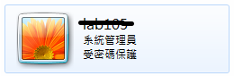
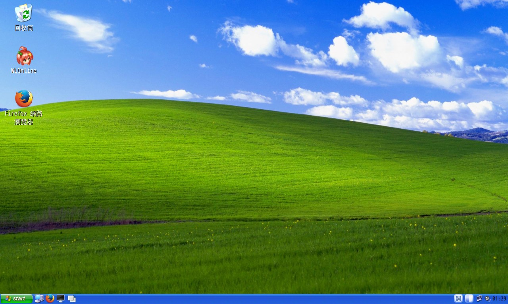
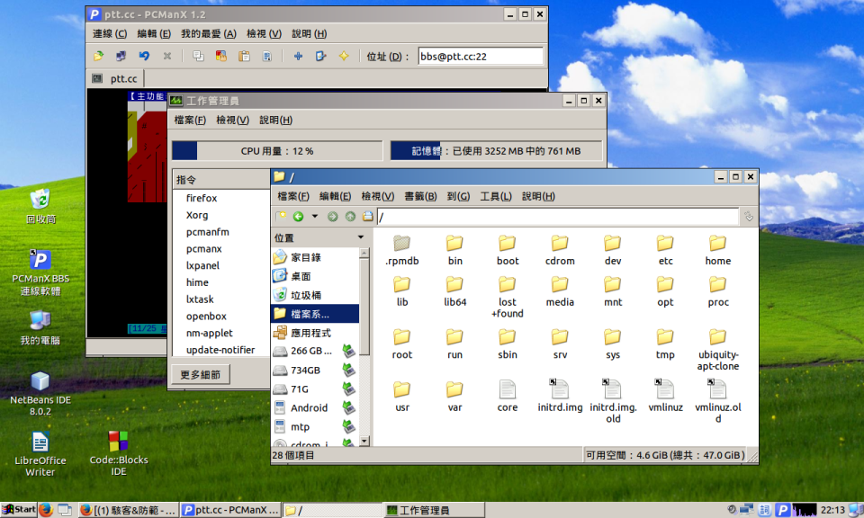
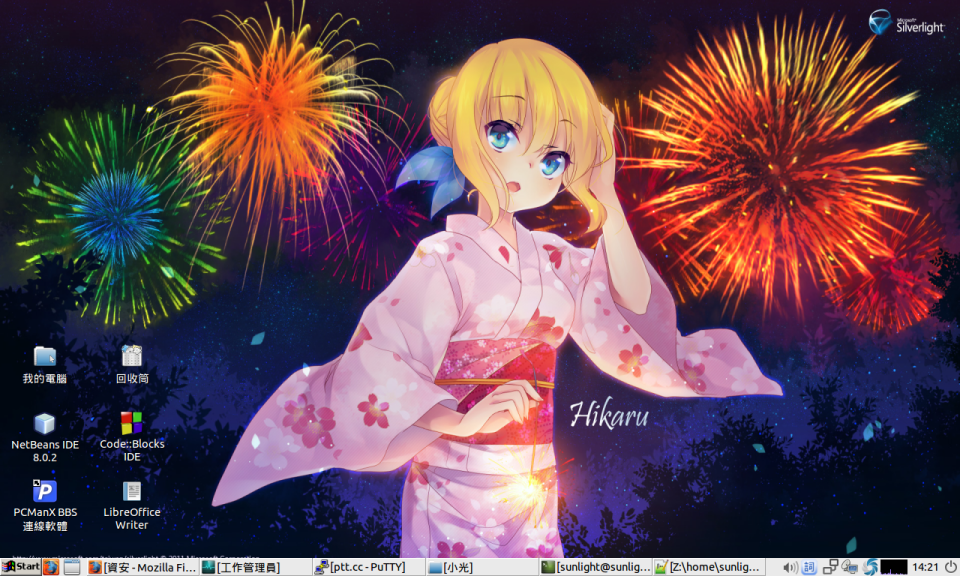

作業系統資訊安全
林品儒
2015/11/30
作業系統
管理電腦硬體與軟體資源的電腦程式
提供和使用者互動的介面
Linux,MacOS,Windows
在談談資訊安全之前...
先來看看各作業系統使用的比例
作業使統使用份額
2015年10月統計
| Win10 | Win8 | Win7 | WinXP | Linux | Mac | Mobile |
|---|---|---|---|---|---|---|
| 12.6% | 17.3% | 46.2% | 2.4% | 5.4% | 10.4% | 5.0% |
取自W3schools
作業系統使用份額
2015年10月統計
| Win10 | Win8 | Win7 | WinXP | Linux | Mac |
|---|---|---|---|---|---|
| 9.0% | 16.21% | 50.26% | 9.03% | 1.57% | 9.02% |
取自StatCounter
各位有沒有發現
Windows至少佔了8成的使用比例
那誰會變成駭客攻擊的目標呢?
先來談談最見的Windows
重灌電腦大家都會
按一按等他跑一跑
最後輸入使用者名稱就可以了
問題在哪裡?
預設的使用者權限是管理員
實驗室剛灌好的電腦
管理員權限有多大?
說多大就多大
變更系統管理帳戶等等
反正就比一般用戶大
大家都知道
安裝程式只要點兩下就好了
執行一般的程式也是點兩下
好像沒什麼不一樣
有個大問題
要怎麼知道你跑的執行檔會不會安裝東西
會偷偷安裝的和一般安全的程式差在哪裡
反正就交給防毒軟體啦~~
統計一下
使用Windows的人舉手
有安裝防毒軟體的人舉手
有中過病毒的舉手
然後一定有人裝過防毒還中毒的...
自身案例
高中時在學校社辦放了個人用的電腦
社辦內用區網連結所以可以信長5v5
有一天每個資料夾裡多了一個執行檔但是圖示是資料夾
檔名和現在的資料夾名字一樣
點下去後沒啥事發生但怕怕的就重灌了...
以上還不是完整的故事
後來有一天AXAST跳出警告視窗發現5000個病毒
於是我趕緊設定開機掃毒
但是重開之後直接到桌面 防毒也開不起來了
嚇到閃尿於是就再重灌了一次...
防毒軟體不是萬能
就算是乾淨的系統也照樣爆炸
就是漏掉了使用者權限...
絕對不是XP害的
惡意程式的運作原理
用系統漏洞摸進使用者的電腦
利用使用者權限變更作業系統
然後沒人發現 可喜可賀
於是乎
當大家平常都用管理員帳號惡意程式就有天大的權限
用一般用戶惡意程式甚至可能跑不起來...
就算很麻煩
還是希望大家將管理員帳號設密碼
自己另外開一個一般帳戶
雖然安裝程式不方便但是對惡意程式也不方便
接下來
來講解一下可執行檔
還有勒索病毒
可執行檔
在Windows中可執行檔是看副檔名
所以只要是.exe都可以執行
連網路上下載下來的也可以
於是
從電子郵件載下來一個word圖示的檔案
點下去就讓可執行檔執行了...
一般人根本不會開顯示副檔名
誠心推薦
為了安全起見一定要打開顯示副檔名
不要執行別人傳來的執行檔
勒索病毒
將使用者檔案加密並要付費才可解密
莫名其妙就摸進電腦裡
古代石版記載著...
某公司研發間諜程式的資料被駭客弄出來
資料裏面包含了未公開的系統漏洞
放在網路上任何人都可以下載
於是攻擊的手法又變多了
任意執行漏洞
利用漏洞可以在使用者端執行任意的程式碼
然後就下載了惡意軟體開始執行
可能被攻擊的點
Outlook
Flash
Java
IE...
不論如何
不點開來路不明的信件
停用Flash播放器
停用Java附加元件
用IE當其他瀏覽器的下載器
記得一定要把系統和程式更新
接下來
來看看Linux
Linux
你可能聽過但是不一定看過
不是只能拿來當伺服器嗎?
可能有人注意到
W3school竟然有5%使用者用Linux
原因就是因為可以日常使用
猜作業系統
圖形化介面
假如有人說Linux只有文字很難用
你要對其資訊落後心生憐憫
然後拿我的桌面截圖去嗆他
Linux的權限管理
分成超級使用者(root)和一般使用者
只有超級使用者可以變更系統
那這和Windows不是一樣嗎?
不一樣
Linux預設帳號是一般使用者
可讓特定帳號暫時變成root
且任何使用者一定要密碼
如此一來
你要裝任何軟體都要打密碼
要對系統進行變更要先變成root
於是惡意軟體難以動作
可執行檔
Linux是看檔案的前幾個位元來辨識
就算不是叫作.exe也可以執行
那這樣不就更危險了嗎?
檔案權限

檔案執行
Linux可以限制檔案是否能執行
且下載下來的檔案預設是無法執行
你執行檔點兩下就用記事本開了...
最後
除了Win和Mac之外還有其他作業系統
誠心推薦Lubuntu
有機會的話對Linux多研究 齁勝!!
就算不會Linux也沒關係
就當Windows用就好了
那桌布怎麼辦
我還是會用微軟出的桌布就是了...